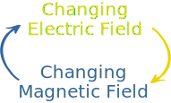
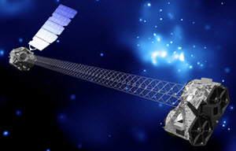

Electromagnetic Spectrum
Electromagnetism
It is called "electromagnetism" because electricity and magnetism are linked:

A changing electric field produces a magnetic field,
a changing magnetic field produces an electric field,

... around and around ... !
So electricity and magnetism are linked in an ongoing dance.
This effect heads off through space at the fastest speed possible: the speed of light.
Here is the full electromagnetic spectrum:
Higher frequency (rate of vibration) has more energy and shorter wavelength.
The spectrum is continuous with no sudden changes or boundaries.
How a wave interacts with matter depends on its energy and the type of matter
Example: Our Bodies
- radio waves pass through our bodies
- some microwaves get absorbed and heat us up
- skin absorbs some infrared and light, and reflects the rest

- UV (ultraviolet) is absorbed by the very outer layer of our skin (which causes sunburn and skin cancer)
- X-rays are absorbed at different rates by bone and muscle so we can see inside us

- Gamma rays mostly pass through, but any that get absorbed may harm our cells by ionization (see below)
So some waves pass right through our bodies, others get reflected or absorbed at different rates.

Example: From The Sun
A lot of the the radiation from the Sun gets reflected or absorbed by the atmosphere.
Only
- radio
- some infrared
- visible light, and
- some ultraviolet
get all the way through:

Imagine: if our eyes could only see X-rays the sky would be black!

So telescopes like the NuSTAR X-ray telescope have to be in orbit.
Ranges
We like to think of the spectrum as having these ranges:
- Radio and Microwaves have low frequencies, low energy and long wavelengths
- IR (infrared)
- Visible Light
- UV (ultraviolet)
- X-rays and Gamma rays have high frequencies, high energy and short wavelengths
There is disagreement on the exact range values (for example X-Rays from an X-ray tube and Gamma rays from radioactive materials overlap) but here is a handy guide:
| Typical Wavelength | Commonly Defined Range | |||
|---|---|---|---|---|
| Radio | meters (m) | Above 10 cm | ||
| Microwave | centimeters (cm) | 1 mm to 10 cm | ||
| Infrared | micrometers (μm) | 750 nm to 1 mm | ||
| Light | 100s of nanometers | 380 nm to 750 nm | ||
| UV | 100 nanometers | 10 nm to 380 nm | ||
| X-rays | nanometers (nm) | 10 pm to 10 nm | ||
| Gamma rays | picometers (pm) | below 10 pm |
See Units in Equations for more about nanometers, picometers, etc.
Speed of Light
Electromagnetic waves travel at the "Speed of Light" at almost 300,000,000 meters per second (to be exact: 299,792,458 meters per second) in a vacuum.
That is 300 million meters every second, or:
- 3 × 108 m/s
- 300,000 km/s
- 186,000 miles per second
But the speed can be slower ...
| Medium | Speed million m/s |
|---|---|
| Vacuum | 300 |
| Ice | 228 |
| Water | 225 |
| Ethanol | 220 |
| Glass | 205 |
| Olive oil | 204 |
| Diamond | 123 |
At slower speeds the wavelength is shorter for the same frequency.
We can work out the wavelength:
wavelength = speedfrequency
Example: Red Light at a frequency of 4 × 1014
In a vacuum the wavelength is:
3 × 1084 × 1014 = 7.5 × 10-7 = 750 nm
In water the wavelength is:
2.25 × 1084 × 1014 = 5.625 × 10-7 = 562 nm
The wavelength is different but the light stays the same color as the frequency is the same.
Important: the wavelengths mentioned on this page are for a vacuum. Adjust them like above if not.
Try adjusting the sliders on this demo and see how the top of a wave moves the same speed (which is actually billions of times slower than reality):
Wavelengths vs Frequency Activity
Try this: Walk across the room in 5 seconds:
- taking long steps ("long wavelength")
- and again taking short steps ("short wavelength")
What is the frequency of your steps in each case?
Now try that again but take 20 seconds to cross the room. What happens?
Energy
A higher frequency (rate of vibration) has shorter wavelength and more energy.
Example: Which has more energy, light or X-rays?
X-rays have more energy, with frequencies around 1018, compared to light around 1014
Example: Which has more energy, red light or blue light?
Blue light has higher frequency (with shorter wavelengths), so has more energy than red.


Energy and Ionization
Gamma rays, x-rays, and some ultraviolet waves have such high energy that they are "ionizing," meaning they can knock electrons out of atoms.
This makes atoms charged and more likely to form new chemical reactions, which can be harmful to our cells, killing them or changing them so they grow out of control and form cancer.
Remembering
How to remember the spectrum?
It goes: Radio, Micro, Infrared, Light, Ultraviolet, Rays
- Radio and Microwaves are at the low energy end
- Infrared is "before red"
- Visible light goes "Roy G Bv": Red Orange Yellow Green Blue Violet
- Ultraviolet is "after violet"
- Rays (X-rays and gamma rays) at the high energy end
To remember the energy and danger levels, think:
"Radio is low, but rays are like razors"
As Photons
Electromagnetic radiation behaves as waves, but also behaves as packets of energy called Photons.
- We can measure a photon's position and momentum.
- Photons have no mass, but each photon has a specific amount of energy that depends on its frequency (number of vibrations per second).
- Each photon has a wavelength
So it is like a particle and also like a wave. This is called the "wave–particle duality".

Einstein wrote about it:
"It seems as though we must use sometimes the one theory and sometimes the other, while at times we may use either."